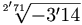

La X de cerrar
 De: La Frikipedia, la enciclopedia extremadamente seria.
De: La Frikipedia, la enciclopedia extremadamente seria.
| De la serie Elementos químicos:
|
|
|
| Nombre oficial:
|
Equisenio
|
| Otros nombres:
|
El Botoncito Rojo, El Botón de Cerrar, o simplemente, 'La Equis'
|
| Serie alquímica:
|
Gas innoble
|
| Descubridor:
|
Mr. X (de ahí el nombre del elemento)
|
| Color en tabla:
|
Cualquiera que soporten en conjunto tu tarjeta gráfica y tu sentido del gusto
|
| Presente en:
|
Ventanas del ordenador
|
| Usos:
|
En Güindous, tiene cualquier uso menos cerrar la ventana
|
| Estado:
|
Sólido, Líquido y Bloqueado
|
| Peso kg/puñao:
|
Físicamente, nada; pero moralmente pesa mucho
|
| Estructura:
|
Cuadrado con la antepenúltima letra del abecedario metida dentro
|
| Abstracción:
|
Se abstrae al llegar a los 12º Cuelguin
|
| Humungoso:
|
No, pero halitoso sí
|
Dícese de ese pequeño botón de acción que se encuentra en la esquina superior derecha de todas las ventanas (o casi todas, así que ya empezamos bien), formado por Equisenio (número  en la tabla periódica de los elementos). En los sistemas inoperativos Mac y Linux únicamente cumple la función de cerrar la ventana en cuestión (pobres mortales).
Sin embargo, en cualquier sistema inoperativo Windows, sin importar cuán antiguo sea, la lista de prestaciones de este aparentemente insignificante botón parece no tener fin.
Lista de utilidades de la X en Windows
Todas estas funciones ocupaban muchas líneas de código, así que los programadores de Mocosoft no tuvieron espacio para poner una última función a este botón (una función que, por otro lado, carece de importancia): la de cerrar la ventana en que se encuentra. Esto es, bajo ningún concepto este botón cerrará la ventana que lo contiene, sino que realizará al azar una o varias de estas otras funciones:
- Abrir ventanas que piden la confirmación del guardado de datos.
- Reiniciar el equipo.
- Abrir y cerrar la unidad CD-ROM.
- Bloquear el ordenador.
- Hacer que empiecen a emitirse extraños pitidos.
- Inmovilizar el cursor del ratón.
- Fundir la fuente de alimentación.
- Abrir el Administrador de Tareas.
- Vaciar la Papelera de Reciclaje.
- Atraer alienígenas con ansias homicidas hasta tu casa.
- Cerrar otra ventana que no sea la que querías cerrar.
- Formatear todos los dispositivos externos que tenías conectados al ordenador.
- Borrar unos pocos archivos .DLL cada vez que se pulsa.
- Cortar el suministro eléctrico de la casa.
- Abrir una ventana con el texto 'Este programa no responde'.
- Borrar todos los vídeos porno que tantas horas le costó bajar a tu eMule.
- Fundir la pantalla (ADVERTENCIA: Si usas pantalla de las antiguas, podría explotar el tubo de vacío).
- Provocar una paradoja espacio-temporal que te convierta en tu propio abuelo.
- Causar una alteración en la Fuerza.
- Acelerar el reloj de tu antivirus y hacer que caduque antes.
- Acto seguido, abrir todos los puertos del equipo.
- Hacer aparecer al temido Pantallazo azul.
- Cerrar muchas cosas
- Actos sexual de las computadoras
Autor(es):
- Benjaminchafer
- Azulejos
- Nadaquever
- Calico
- Dark temptation
- Gñapero Solitario
- Vanegas9519
- Clari95
Frikipedia 2005-2016, Licencia
GFDL 1.2 - Extraído por FrikiLeaks